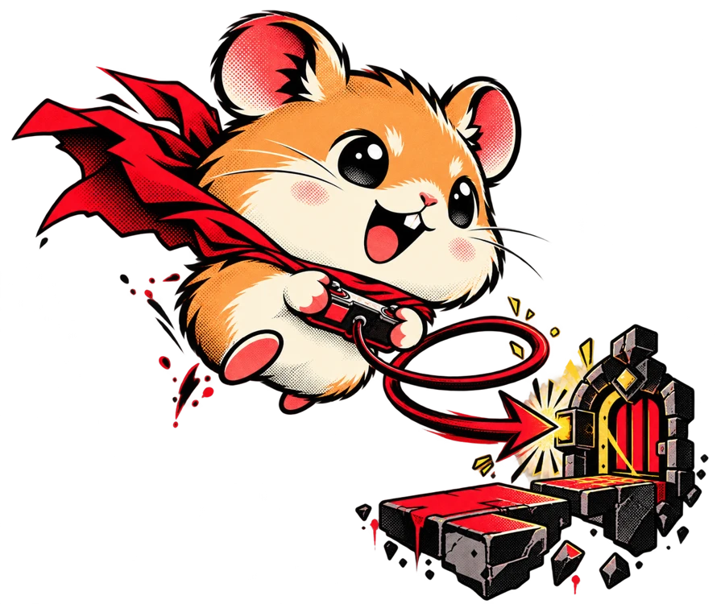
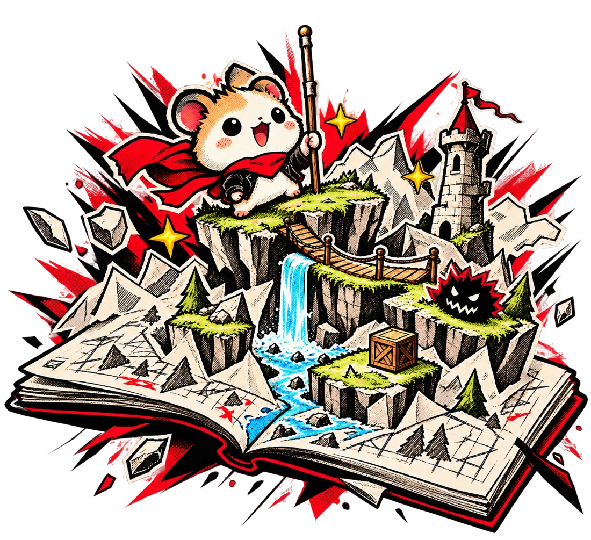

มีของจริง
ให้เห็นความสามารถ
เปิดผลงานที่คุณสร้างให้ดูได้จริง พร้อมอธิบายว่าส่วนไหนทำงานอย่างไร และคุณรับผิดชอบอะไร
พัฒนางานใน 1 เดือน พร้อมเข้าสู่รั้วมหาวิทยาลัย
26 ต.ค. – 27 พ.ย. 2569 • เรียนจันทร์–ศุกร์

เวลาบอกว่า «ผมทำได้» คุณจะมีผลงานเปิดให้ดู
พร้อมหลักฐานตั้งแต่ไอเดีย การตัดสินใจ จนถึงสิ่งที่แก้ให้ดีขึ้น
เปิดผลงานที่คุณสร้างให้ดูได้จริง พร้อมอธิบายว่าส่วนไหนทำงานอย่างไร และคุณรับผิดชอบอะไร
เก็บข้อมูลผู้ใช้ แบบร่าง และการแก้แต่ละรอบ ให้คนเห็นว่าคุณแก้ปัญหาอย่างไร ไม่ได้เห็นแค่ภาพผลงานตอนจบ
ฝึกเปิดงานให้ดู อธิบายว่าช่วยใคร และตอบคำถามจากงานที่คุณลงมือทำ เตรียมเรื่องราวไว้ใช้ในพอร์ตและวันนำเสนอ
การคัดเลือกเข้ากิจกรรม การรับเข้าศึกษา และโอกาสทางธุรกิจขึ้นอยู่กับเกณฑ์ของแต่ละแห่ง
ตัวอย่างเกมจากสมาชิก Hamster Hub
กดดูคลิปเพื่อสำรวจผลงานแต่ละสไตล์
ผลงานในชุมชน ไม่ใช่ผลงานจบคอร์สรุ่นนี้
 ดูเทรลเลอร์ ↗
ดูเทรลเลอร์ ↗SEAL STUDIO
 ดูเทรลเลอร์ ↗
ดูเทรลเลอร์ ↗RE_SLASH
 ดูเทรลเลอร์ ↗
ดูเทรลเลอร์ ↗PXCoN
ทั้ง 3 คลิปเล่นแบบปิดเสียง · ลากเพื่อเลือกผลงาน · กดภาพเพื่อเปิดคลิป
เริ่มจากทำ MVP หรือผลงานรุ่นแรกที่ใช้งานได้ ต่อด้วยการวิเคราะห์ตลาด กระบวนการพัฒนาซอฟต์แวร์ การนำเสนอ การต่อยอดแบบ Startup และการใช้งานจริงโดยผู้ใช้ ก่อนนำเสนอผลงานปลายคอร์ส ดูแต่ละช่วงพร้อมคำอธิบาย ↗
MVP คือผลงานรุ่นแรกที่มีส่วนสำคัญพอให้ใช้งานและสาธิตแนวคิดได้ จุดเริ่มต้นคือทำสิ่งจำเป็นให้จบก่อน แล้วจึงพัฒนาต่อจากข้อมูลที่ได้
นำงานจากกิจกรรมก่อนหน้ามาพัฒนาต่อให้จบได้ คุยกับทีมเรื่องโปรเจกต์ที่มีและพื้นฐานของคุณ เพื่อวางเป้าหมายที่เหมาะสมก่อนสมัคร
รอบนี้อยู่ระหว่าง 26 ต.ค. – 27 พ.ย. 2569 ระบุเรียนจันทร์–ศุกร์ ส่วน Market Analysis คงช่วง 1–3 พ.ย. ตามกำหนดการ สอบถามทีมเพื่อยืนยันเวลาเรียนรายวัน รูปแบบการเรียน ค่าเรียน และอุปกรณ์ก่อนสมัคร
ได้ฝึกสร้างผลงาน อธิบายวิธีคิด แสดงสิ่งที่ปรับจากความคิดเห็น และนำเสนองาน สิ่งเหล่านี้นำไปประกอบเรื่องราวใน Portfolio ได้ แต่การสมัครและการคัดเลือกต้องดูเกณฑ์ของแต่ละโอกาส
แจ้งทีมว่ามีพื้นฐานด้านไหน เคยทำอะไร และอยากพัฒนาอะไร เพื่อให้ทีมประเมินความเหมาะสมและขอบเขตงานก่อนสมัคร อ่านข้อมูลสำหรับผู้ปกครอง ↗
ทำโปรเจกต์ให้ใช้ได้จริง ทดลองกับผู้ใช้ และเตรียมผลงานพร้อมเล่าต่อในพอร์ต
เริ่มสร้างโปรเจกต์ของคุณ26 ต.ค. – 27 พ.ย. 2569 · คุยโปรเจกต์ที่อยากทำกับทีมผ่าน LINE
สอบถามพื้นฐาน เวลาเรียน และค่าเรียนก่อนสมัคร

จบช่วงแรกพร้อม MVP ที่เปิดให้เห็นได้ว่าไอเดียของคุณทำงานอย่างไร
26–30 ต.ค. · MVP
ค้นหาความต้องการของผู้ใช้ เลือกสิ่งสำคัญมาพัฒนา แล้วนำเสนอว่าผลงานช่วยเขาอย่างไร
1–3 พ.ย. · Market Analysis
4–10 พ.ย. · Software Engineering Process
11–13 พ.ย. · Presentation
รับฟังผู้ใช้จริง แก้จุดติดขัด และเตรียมผลงานพร้อมเรื่องราวสำหรับวันนำเสนอ
16–20 พ.ย. · Startup Process
23–25 พ.ย. · User Acceptance Test & Feedback
26–27 พ.ย. · Final Presentation